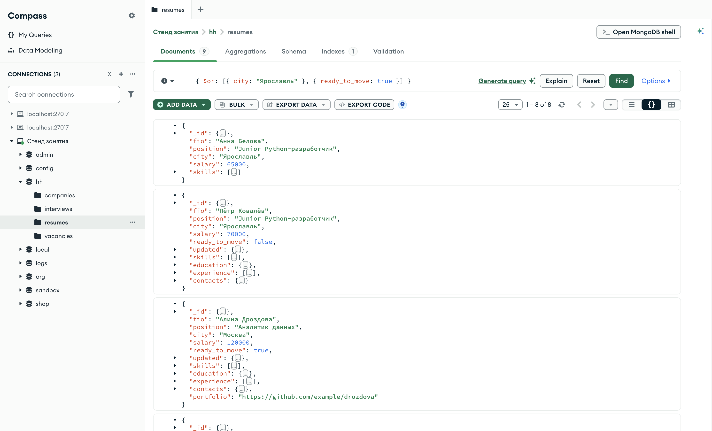
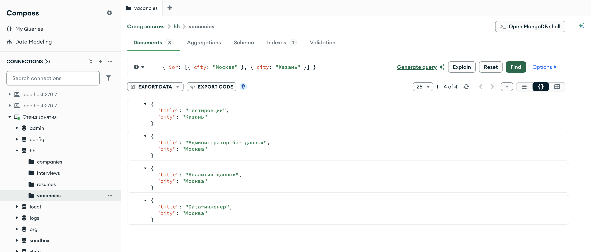
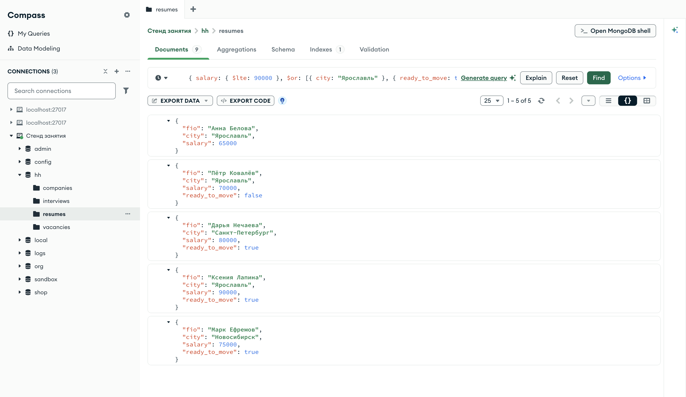
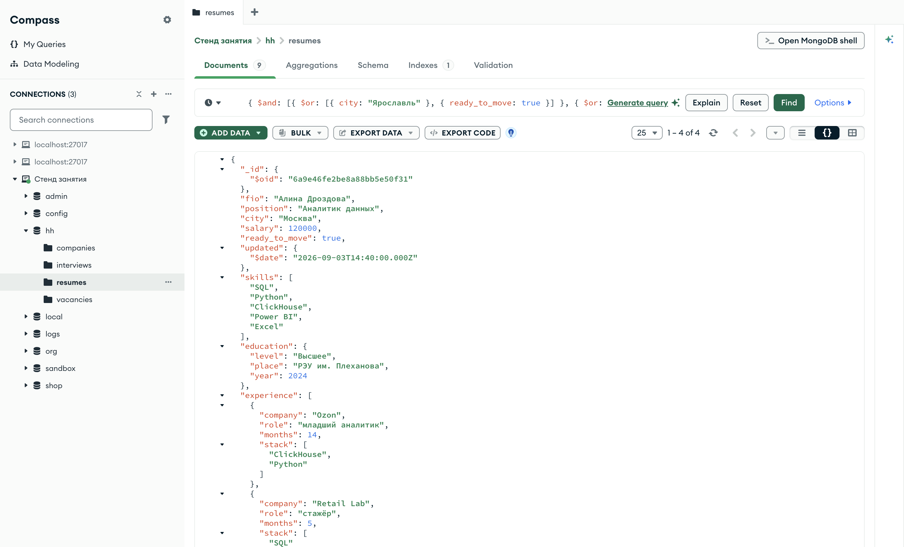
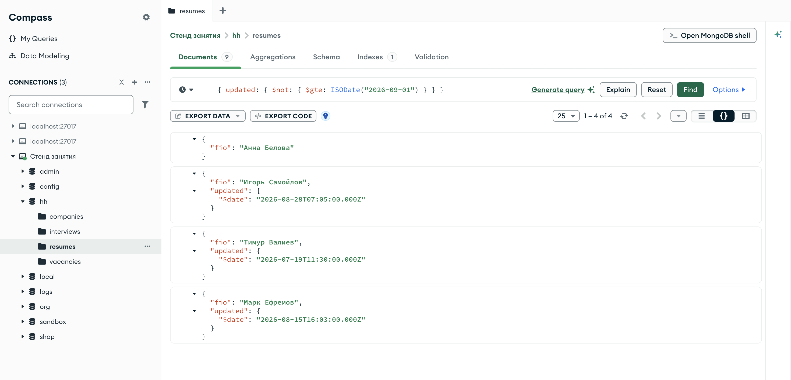
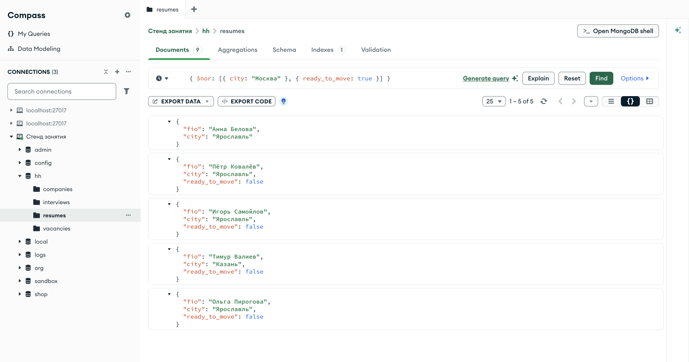

Справочник по MongoDB · модуль 2 · язык фильтров
2.4
Логика:
$and $or $not $nor
До сих пор все условия фильтра соединялись по «и». Здесь разобраны логические операторы: $or — «хотя бы одно из условий», $and — «и», записанное явно, $not — отрицание условия и $nor — «ни одно из условий». Отдельно — как они сочетаются с обычными парами фильтра и какой оператор выбрать для той или иной задачи.
- Категория
- Язык запросов
- Уровень
- Начальный
- Связанные темы
- Операторы сравнения, списки значений
$in, наличие поля$exists - Зачем это знать
- Записывать условия отбора, в которых есть «или» и «не»
Как запускать примеры этой главы
mongodb-glava-2.4-python.zip, 60 КБmongodb-glava-2.4-ruby.zip, 60 КБmongodb-glava-2.4-go.zip, 65 КБmongodb-glava-2.4-cpp.zip, 63 КБ — все примеры главы готовыми программами, учебные базы и стенд в Docker. В README.md — запуск в Docker, если Compass нет или он не подключается, и на установленном сервере с Compass, а также что должна напечатать каждая программа.lessons/ch2_4.py — пример вставляется в конец файлаlessons/ch2_4.rb — пример вставляется в конец файлаlessons/ch2_4.go — пример внутрь скобок в конце main, функции и типы — выше mainlessons/ch2_4.cpp — пример внутрь скобок в конце main, функции — выше maincd lessons, затем python ch2_4.pycd lessons, затем python3 ch2_4.py · в Docker: docker compose run --rm python lessons/ch2_4.pycd lessons, затем ruby ch2_4.rb · в Docker: docker compose run --rm ruby lessons/ch2_4.rbcd lessons, затем go run ch2_4.go · в Docker: docker compose run --rm go lessons/ch2_4.gocd lessons, затем g++ -std=c++17 ch2_4.cpp -o prog $(pkg-config --cflags --libs libmongocxx1) && ./prog · в Docker: docker compose run --rm cpp lessons/ch2_4.cpp§1$or: хотя бы одно условие
Оператор $or принимает массив условий и отбирает документы, для которых выполнено хотя бы одно из них. Каждое условие в массиве — отдельный документ фильтра, такой же, как в главах 2.1–2.3. В отличие от $in, условия $or могут относиться к разным полям.
Оператор стоит на месте имени поля: {"$or": [{"city": "Ярославль"}, {"ready_to_move": true}]}. Этот фильтр отбирает соискателей, которых можно пригласить в ярославский офис: они либо живут в Ярославле, либо готовы переехать. Пример считает каждое условие отдельно, затем их сочетание, и выводит найденные резюме.
print("из Ярославля: ", resumes.count_documents({"city": "Ярославль"})) print("готов к переезду: ", resumes.count_documents({"ready_to_move": True})) print("одно из двух ($or):", resumes.count_documents({"$or": [{"city": "Ярославль"}, {"ready_to_move": True}]})) for doc in resumes.find({"$or": [{"city": "Ярославль"}, {"ready_to_move": True}]}, {"_id": 0, "fio": 1, "city": 1, "ready_to_move": 1}): print(doc)
std::cout << "из Ярославля: " << resumes.count_documents(make_document(kvp("city", "Ярославль"))) << std::endl; std::cout << "готов к переезду: " << resumes.count_documents(make_document(kvp("ready_to_move", true))) << std::endl; std::cout << "одно из двух ($or): " << resumes.count_documents(make_document(kvp("$or", make_array(make_document(kvp("city", "Ярославль")), make_document(kvp("ready_to_move", true)))))) << std::endl; mongocxx::options::find options; options.projection(make_document(kvp("_id", 0), kvp("fio", 1), kvp("city", 1), kvp("ready_to_move", 1))); for (const auto& doc : resumes.find(make_document(kvp("$or", make_array(make_document(kvp("city", "Ярославль")), make_document(kvp("ready_to_move", true))))), options)) { std::cout << bsoncxx::to_json(doc, bsoncxx::ExtendedJsonMode::k_relaxed) << std::endl; }
yar, _ := resumes.CountDocuments(ctx, bson.D{{Key: "city", Value: "Ярославль"}}) pereezd, _ := resumes.CountDocuments(ctx, bson.D{{Key: "ready_to_move", Value: true}}) ili, _ := resumes.CountDocuments(ctx, bson.D{{Key: "$or", Value: bson.A{bson.D{{Key: "city", Value: "Ярославль"}}, bson.D{{Key: "ready_to_move", Value: true}}}}}) fmt.Println("из Ярославля: ", yar) fmt.Println("готов к переезду: ", pereezd) fmt.Println("одно из двух ($or):", ili) cursor, _ := resumes.Find(ctx, bson.D{{Key: "$or", Value: bson.A{bson.D{{Key: "city", Value: "Ярославль"}}, bson.D{{Key: "ready_to_move", Value: true}}}}}, options.Find().SetProjection(bson.D{{Key: "_id", Value: 0}, {Key: "fio", Value: 1}, {Key: "city", Value: 1}, {Key: "ready_to_move", Value: 1}})) for cursor.Next(ctx) { var doc bson.D cursor.Decode(&doc) out, _ := bson.MarshalExtJSON(doc, false, false) fmt.Println(string(out)) }
puts "из Ярославля: " + resumes.count_documents({ "city" => "Ярославль" }).to_s puts "готов к переезду: " + resumes.count_documents({ "ready_to_move" => true }).to_s puts "одно из двух ($or): " + resumes.count_documents({ "$or" => [{ "city" => "Ярославль" }, { "ready_to_move" => true }] }).to_s resumes.find({ "$or" => [{ "city" => "Ярославль" }, { "ready_to_move" => true }] }, projection: { "_id" => 0, "fio" => 1, "city" => 1, "ready_to_move" => 1 }) .each { |doc| puts doc.inspect }
из Ярославля: 5
готов к переезду: 4
одно из двух ($or): 8
{'fio': 'Анна Белова', 'city': 'Ярославль'}
{'fio': 'Пётр Ковалёв', 'city': 'Ярославль', 'ready_to_move': False}
{'fio': 'Алина Дроздова', 'city': 'Москва', 'ready_to_move': True}
{'fio': 'Игорь Самойлов', 'city': 'Ярославль', 'ready_to_move': False}
{'fio': 'Дарья Нечаева', 'city': 'Санкт-Петербург', 'ready_to_move': True}
{'fio': 'Ксения Лапина', 'city': 'Ярославль', 'ready_to_move': True}
{'fio': 'Марк Ефремов', 'city': 'Новосибирск', 'ready_to_move': True}
{'fio': 'Ольга Пирогова', 'city': 'Ярославль', 'ready_to_move': False}
из Ярославля: 5
готов к переезду: 4
одно из двух ($or): 8
{ "fio" : "Анна Белова", "city" : "Ярославль" }
{ "fio" : "Пётр Ковалёв", "city" : "Ярославль", "ready_to_move" : false }
{ "fio" : "Алина Дроздова", "city" : "Москва", "ready_to_move" : true }
{ "fio" : "Игорь Самойлов", "city" : "Ярославль", "ready_to_move" : false }
{ "fio" : "Дарья Нечаева", "city" : "Санкт-Петербург", "ready_to_move" : true }
{ "fio" : "Ксения Лапина", "city" : "Ярославль", "ready_to_move" : true }
{ "fio" : "Марк Ефремов", "city" : "Новосибирск", "ready_to_move" : true }
{ "fio" : "Ольга Пирогова", "city" : "Ярославль", "ready_to_move" : false }
из Ярославля: 5
готов к переезду: 4
одно из двух ($or): 8
{"fio":"Анна Белова","city":"Ярославль"}
{"fio":"Пётр Ковалёв","city":"Ярославль","ready_to_move":false}
{"fio":"Алина Дроздова","city":"Москва","ready_to_move":true}
{"fio":"Игорь Самойлов","city":"Ярославль","ready_to_move":false}
{"fio":"Дарья Нечаева","city":"Санкт-Петербург","ready_to_move":true}
{"fio":"Ксения Лапина","city":"Ярославль","ready_to_move":true}
{"fio":"Марк Ефремов","city":"Новосибирск","ready_to_move":true}
{"fio":"Ольга Пирогова","city":"Ярославль","ready_to_move":false}
из Ярославля: 5
готов к переезду: 4
одно из двух ($or): 8
{"fio"=>"Анна Белова", "city"=>"Ярославль"}
{"fio"=>"Пётр Ковалёв", "city"=>"Ярославль", "ready_to_move"=>false}
{"fio"=>"Алина Дроздова", "city"=>"Москва", "ready_to_move"=>true}
{"fio"=>"Игорь Самойлов", "city"=>"Ярославль", "ready_to_move"=>false}
{"fio"=>"Дарья Нечаева", "city"=>"Санкт-Петербург", "ready_to_move"=>true}
{"fio"=>"Ксения Лапина", "city"=>"Ярославль", "ready_to_move"=>true}
{"fio"=>"Марк Ефремов", "city"=>"Новосибирск", "ready_to_move"=>true}
{"fio"=>"Ольга Пирогова", "city"=>"Ярославль", "ready_to_move"=>false}
Из Ярославля пять резюме, готовы к переезду четыре, а через $or найдено восемь, не девять. Ксения Лапина живёт в Ярославле и готова к переезду, то есть подходит под оба условия, но в результат попала один раз. $or проверяет каждый документ один раз, и документ либо входит в результат, либо нет. Не подошёл только Тимур Валиев — он из Казани и переезжать не готов.

hh.resumes, фильтр { $or: [{ city: "Ярославль" }, { ready_to_move: true }] } — восемь резюме из девятиВкладка Documents подписана числом 9, счётчик — 1 – 8 of 8. У первых двух документов в кадре город — Ярославль, у третьего, Алины Дроздовой, — Москва, но поле ready_to_move равно true. Каждый документ прошёл хотя бы по одному условию.
§2$or на одном поле и $in
Если все условия $or проверяют одно поле на равенство, тот же отбор записывается через $in из главы 2.3.
print("$or:", vacancies.count_documents({"$or": [{"city": "Москва"}, {"city": "Казань"}]})) print("$in:", vacancies.count_documents({"city": {"$in": ["Москва", "Казань"]}}))
std::cout << "$or: " << vacancies.count_documents(make_document(kvp("$or", make_array(make_document(kvp("city", "Москва")), make_document(kvp("city", "Казань")))))) << std::endl; std::cout << "$in: " << vacancies.count_documents(make_document(kvp("city", make_document(kvp("$in", make_array("Москва", "Казань")))))) << std::endl;
cherezOr, _ := vacancies.CountDocuments(ctx, bson.D{{Key: "$or", Value: bson.A{bson.D{{Key: "city", Value: "Москва"}}, bson.D{{Key: "city", Value: "Казань"}}}}}) cherezIn, _ := vacancies.CountDocuments(ctx, bson.D{{Key: "city", Value: bson.D{{Key: "$in", Value: bson.A{"Москва", "Казань"}}}}}) fmt.Println("$or:", cherezOr) fmt.Println("$in:", cherezIn)
puts "$or: " + vacancies.count_documents({ "$or" => [{ "city" => "Москва" }, { "city" => "Казань" }] }).to_s puts "$in: " + vacancies.count_documents({ "city" => { "$in" => ["Москва", "Казань"] } }).to_s
$or: 4 $in: 4
$or: 4 $in: 4
$or: 4 $in: 4
$or: 4 $in: 4
Результаты совпадают. Запись через $in короче: имя поля стоит один раз, значения перечислены в одном списке. $or нужен, когда условия относятся к разным полям или используют разные операторы.

hh.vacancies, фильтр { $or: [{ city: "Москва" }, { city: "Казань" }] }Те же четыре вакансии и в том же порядке, что по фильтру с $in в главе 2.3: одна в Казани и три в Москве. Проекция оставляет название и город.
§3«И» вместе с «или»
Оператор $or — одна из пар фильтра, и с остальными парами он соединяется по «и». Фильтр {"salary": {"$lte": 90000}, "$or": [...]} читается так: зарплата не больше 90 000, и при этом выполнено хотя бы одно из условий $or.
filtr = {"salary": {"$lte": 90000},
"$or": [{"city": "Ярославль"},
{"ready_to_move": True}]}
for doc in resumes.find(filtr, {"_id": 0, "fio": 1, "salary": 1, "city": 1, "ready_to_move": 1}):
print(doc)
auto filtr = make_document( kvp("salary", make_document(kvp("$lte", 90000))), kvp("$or", make_array(make_document(kvp("city", "Ярославль")), make_document(kvp("ready_to_move", true))))); mongocxx::options::find options; options.projection(make_document(kvp("_id", 0), kvp("fio", 1), kvp("salary", 1), kvp("city", 1), kvp("ready_to_move", 1))); for (const auto& doc : resumes.find(filtr.view(), options)) { std::cout << bsoncxx::to_json(doc, bsoncxx::ExtendedJsonMode::k_relaxed) << std::endl; }
filtr := bson.D{
{Key: "salary", Value: bson.D{{Key: "$lte", Value: 90000}}},
{Key: "$or", Value: bson.A{bson.D{{Key: "city", Value: "Ярославль"}}, bson.D{{Key: "ready_to_move", Value: true}}}}}
cursor, _ := resumes.Find(ctx, filtr,
options.Find().SetProjection(bson.D{{Key: "_id", Value: 0}, {Key: "fio", Value: 1}, {Key: "salary", Value: 1}, {Key: "city", Value: 1}, {Key: "ready_to_move", Value: 1}}))
for cursor.Next(ctx) {
var doc bson.D
cursor.Decode(&doc)
out, _ := bson.MarshalExtJSON(doc, false, false)
fmt.Println(string(out))
}
filtr = { "salary" => { "$lte" => 90000 },
"$or" => [{ "city" => "Ярославль" },
{ "ready_to_move" => true }] }
resumes.find(filtr, projection: { "_id" => 0, "fio" => 1, "salary" => 1, "city" => 1, "ready_to_move" => 1 })
.each { |doc| puts doc.inspect }
{'fio': 'Анна Белова', 'city': 'Ярославль', 'salary': 65000}
{'fio': 'Пётр Ковалёв', 'city': 'Ярославль', 'salary': 70000, 'ready_to_move': False}
{'fio': 'Дарья Нечаева', 'city': 'Санкт-Петербург', 'salary': 80000, 'ready_to_move': True}
{'fio': 'Ксения Лапина', 'city': 'Ярославль', 'salary': 90000, 'ready_to_move': True}
{'fio': 'Марк Ефремов', 'city': 'Новосибирск', 'salary': 75000, 'ready_to_move': True}
{ "fio" : "Анна Белова", "city" : "Ярославль", "salary" : 65000 }
{ "fio" : "Пётр Ковалёв", "city" : "Ярославль", "salary" : 70000, "ready_to_move" : false }
{ "fio" : "Дарья Нечаева", "city" : "Санкт-Петербург", "salary" : 80000, "ready_to_move" : true }
{ "fio" : "Ксения Лапина", "city" : "Ярославль", "salary" : 90000, "ready_to_move" : true }
{ "fio" : "Марк Ефремов", "city" : "Новосибирск", "salary" : 75000, "ready_to_move" : true }
{"fio":"Анна Белова","city":"Ярославль","salary":65000}
{"fio":"Пётр Ковалёв","city":"Ярославль","salary":70000,"ready_to_move":false}
{"fio":"Дарья Нечаева","city":"Санкт-Петербург","salary":80000,"ready_to_move":true}
{"fio":"Ксения Лапина","city":"Ярославль","salary":90000,"ready_to_move":true}
{"fio":"Марк Ефремов","city":"Новосибирск","salary":75000,"ready_to_move":true}
{"fio"=>"Анна Белова", "city"=>"Ярославль", "salary"=>65000}
{"fio"=>"Пётр Ковалёв", "city"=>"Ярославль", "salary"=>70000, "ready_to_move"=>false}
{"fio"=>"Дарья Нечаева", "city"=>"Санкт-Петербург", "salary"=>80000, "ready_to_move"=>true}
{"fio"=>"Ксения Лапина", "city"=>"Ярославль", "salary"=>90000, "ready_to_move"=>true}
{"fio"=>"Марк Ефремов", "city"=>"Новосибирск", "salary"=>75000, "ready_to_move"=>true}
Из восьми резюме, найденных в §1, остались пять: у Игоря Самойлова, Алины Дроздовой и Ольги Пироговой ожидания выше 90 000. Условие на зарплату проверяется у каждого документа, а $or даёт выбор только между своими условиями.

hh.resumes, условие на зарплату и $or в одном фильтреФильтр в поле Compass длиннее строки и обрезан справа; начало видно: { salary: { $lte: 90000 }, $or: [...]. У всех пяти документов зарплата не больше 90 000, и каждый либо из Ярославля, либо с ready_to_move: true.
§4$and: «и», записанное явно
Оператор $and принимает массив условий и требует, чтобы выполнились все. Обычно он не нужен: пары фильтра и так соединяются по «и». Явная запись требуется, когда два условия нельзя поставить в один документ, потому что у них одинаковый ключ. Чаще всего это два $or.
Задача: найти соискателей, которых можно пригласить в Ярославль (§1), и при этом с квалификацией — высшим образованием или опытом работы от 10 месяцев. Каждое требование — отдельное «или». Условия сначала сохраняются в переменные, а затем из них собирается фильтр: так видно, из каких частей он состоит.
dostupen = {"$or": [{"city": "Ярославль"}, {"ready_to_move": True}]}
kvalif = {"$or": [{"education.level": "Высшее"}, {"experience.months": {"$gte": 10}}]}
print("доступен для Ярославля:", resumes.count_documents(dostupen))
print("есть квалификация: ", resumes.count_documents(kvalif))
for doc in resumes.find({"$and": [dostupen, kvalif]}, {"_id": 0, "fio": 1}):
print(doc)
auto dostupen = make_document(kvp("$or", make_array( make_document(kvp("city", "Ярославль")), make_document(kvp("ready_to_move", true))))); auto kvalif = make_document(kvp("$or", make_array( make_document(kvp("education.level", "Высшее")), make_document(kvp("experience.months", make_document(kvp("$gte", 10))))))); std::cout << "доступен для Ярославля: " << resumes.count_documents(dostupen.view()) << std::endl; std::cout << "есть квалификация: " << resumes.count_documents(kvalif.view()) << std::endl; mongocxx::options::find options; options.projection(make_document(kvp("_id", 0), kvp("fio", 1))); for (const auto& doc : resumes.find(make_document(kvp("$and", make_array(dostupen.view(), kvalif.view()))), options)) { std::cout << bsoncxx::to_json(doc, bsoncxx::ExtendedJsonMode::k_relaxed) << std::endl; }
dostupen := bson.D{{Key: "$or", Value: bson.A{
bson.D{{Key: "city", Value: "Ярославль"}},
bson.D{{Key: "ready_to_move", Value: true}}}}}
kvalif := bson.D{{Key: "$or", Value: bson.A{
bson.D{{Key: "education.level", Value: "Высшее"}},
bson.D{{Key: "experience.months", Value: bson.D{{Key: "$gte", Value: 10}}}}}}}
nDostupen, _ := resumes.CountDocuments(ctx, dostupen)
nKvalif, _ := resumes.CountDocuments(ctx, kvalif)
fmt.Println("доступен для Ярославля:", nDostupen)
fmt.Println("есть квалификация: ", nKvalif)
cursor, _ := resumes.Find(ctx, bson.D{{Key: "$and", Value: bson.A{dostupen, kvalif}}},
options.Find().SetProjection(bson.D{{Key: "_id", Value: 0}, {Key: "fio", Value: 1}}))
for cursor.Next(ctx) {
var doc bson.D
cursor.Decode(&doc)
out, _ := bson.MarshalExtJSON(doc, false, false)
fmt.Println(string(out))
}
dostupen = { "$or" => [{ "city" => "Ярославль" }, { "ready_to_move" => true }] }
kvalif = { "$or" => [{ "education.level" => "Высшее" },
{ "experience.months" => { "$gte" => 10 } }] }
puts "доступен для Ярославля: " + resumes.count_documents(dostupen).to_s
puts "есть квалификация: " + resumes.count_documents(kvalif).to_s
resumes.find({ "$and" => [dostupen, kvalif] }, projection: { "_id" => 0, "fio" => 1 })
.each { |doc| puts doc.inspect }
доступен для Ярославля: 8
есть квалификация: 5
{'fio': 'Алина Дроздова'}
{'fio': 'Игорь Самойлов'}
{'fio': 'Марк Ефремов'}
{'fio': 'Ольга Пирогова'}
доступен для Ярославля: 8
есть квалификация: 5
{ "fio" : "Алина Дроздова" }
{ "fio" : "Игорь Самойлов" }
{ "fio" : "Марк Ефремов" }
{ "fio" : "Ольга Пирогова" }
доступен для Ярославля: 8
есть квалификация: 5
{"fio":"Алина Дроздова"}
{"fio":"Игорь Самойлов"}
{"fio":"Марк Ефремов"}
{"fio":"Ольга Пирогова"}
доступен для Ярославля: 8
есть квалификация: 5
{"fio"=>"Алина Дроздова"}
{"fio"=>"Игорь Самойлов"}
{"fio"=>"Марк Ефремов"}
{"fio"=>"Ольга Пирогова"}
Первому условию отвечают восемь резюме, второму — пять, обоим сразу — четыре. Тимур Валиев квалификацией подходит, но он из Казани и переезжать не готов. Марк Ефремов прошёл по второму условию благодаря опыту: образование у него среднее профессиональное, зато 11 месяцев работы.

hh.resumes, $and с двумя условиями $or — четыре резюмеВ Compass этот фильтр вводится одной строкой и в поле целиком не помещается: видны $and и начало первого $or. Счётчик 1 – 4 of 4 совпадает с выводом программы. Первое резюме в списке — Алины Дроздовой: она подошла по готовности к переезду и по высшему образованию.
Без $and два $or пришлось бы записать двумя парами с одним ключом. Словарь Python и хеш Ruby оставили бы только последнюю пару, и фильтр проверял бы одну квалификацию — нашлось бы пять резюме, включая резюме Тимура Валиева. Внутри массива $and повторов ключей нет: каждое условие лежит в своём документе.
§5$not: отрицание условия
Оператор $not ставится на месте условия поля и принимает другое условие — документ с оператором. Фильтр {"updated": {"$not": {"$gte": дата}}} отбирает документы, для которых условие «обновлено не раньше даты» не выполняется. Значение без оператора $not не принимает: для «не равно» есть $ne.
Как и $ne, оператор $not возвращает документы, где поля нет: для них внутреннее условие не выполнено. Пример сравнивает $not с прямым условием «раньше даты».
from datetime import datetime sep01 = datetime(2026, 9, 1) print("$not $gte 01.09:", resumes.count_documents({"updated": {"$not": {"$gte": sep01}}})) print("$lt 01.09: ", resumes.count_documents({"updated": {"$lt": sep01}})) for doc in resumes.find({"updated": {"$not": {"$gte": sep01}}}, {"_id": 0, "fio": 1, "updated": 1}): print(doc)
auto sep01 = bsoncxx::types::b_date{std::chrono::milliseconds{1788220800000}}; // 01.09.2026 00:00 UTC std::cout << "$not $gte 01.09: " << resumes.count_documents(make_document(kvp("updated", make_document(kvp("$not", make_document(kvp("$gte", sep01))))))) << std::endl; std::cout << "$lt 01.09: " << resumes.count_documents(make_document(kvp("updated", make_document(kvp("$lt", sep01))))) << std::endl; mongocxx::options::find options; options.projection(make_document(kvp("_id", 0), kvp("fio", 1), kvp("updated", 1))); for (const auto& doc : resumes.find(make_document(kvp("updated", make_document(kvp("$not", make_document(kvp("$gte", sep01)))))), options)) { std::cout << bsoncxx::to_json(doc, bsoncxx::ExtendedJsonMode::k_relaxed) << std::endl; }
sep01 := time.Date(2026, 9, 1, 0, 0, 0, 0, time.UTC) neSentyabr, _ := resumes.CountDocuments(ctx, bson.D{{Key: "updated", Value: bson.D{{Key: "$not", Value: bson.D{{Key: "$gte", Value: sep01}}}}}}) doSentyabrya, _ := resumes.CountDocuments(ctx, bson.D{{Key: "updated", Value: bson.D{{Key: "$lt", Value: sep01}}}}) fmt.Println("$not $gte 01.09:", neSentyabr) fmt.Println("$lt 01.09: ", doSentyabrya) cursor, _ := resumes.Find(ctx, bson.D{{Key: "updated", Value: bson.D{{Key: "$not", Value: bson.D{{Key: "$gte", Value: sep01}}}}}}, options.Find().SetProjection(bson.D{{Key: "_id", Value: 0}, {Key: "fio", Value: 1}, {Key: "updated", Value: 1}})) for cursor.Next(ctx) { var doc bson.D cursor.Decode(&doc) out, _ := bson.MarshalExtJSON(doc, false, false) fmt.Println(string(out)) }
sep01 = Time.utc(2026, 9, 1) puts "$not $gte 01.09: " + resumes.count_documents({ "updated" => { "$not" => { "$gte" => sep01 } } }).to_s puts "$lt 01.09: " + resumes.count_documents({ "updated" => { "$lt" => sep01 } }).to_s resumes.find({ "updated" => { "$not" => { "$gte" => sep01 } } }, projection: { "_id" => 0, "fio" => 1, "updated" => 1 }) .each { |doc| puts doc.inspect }
$not $gte 01.09: 4
$lt 01.09: 3
{'fio': 'Анна Белова'}
{'fio': 'Игорь Самойлов', 'updated': datetime.datetime(2026, 8, 28, 7, 5)}
{'fio': 'Тимур Валиев', 'updated': datetime.datetime(2026, 7, 19, 11, 30)}
{'fio': 'Марк Ефремов', 'updated': datetime.datetime(2026, 8, 15, 16, 3)}
$not $gte 01.09: 4
$lt 01.09: 3
{ "fio" : "Анна Белова" }
{ "fio" : "Игорь Самойлов", "updated" : { "$date" : "2026-08-28T07:05:00Z" } }
{ "fio" : "Тимур Валиев", "updated" : { "$date" : "2026-07-19T11:30:00Z" } }
{ "fio" : "Марк Ефремов", "updated" : { "$date" : "2026-08-15T16:03:00Z" } }
$not $gte 01.09: 4
$lt 01.09: 3
{"fio":"Анна Белова"}
{"fio":"Игорь Самойлов","updated":{"$date":"2026-08-28T07:05:00Z"}}
{"fio":"Тимур Валиев","updated":{"$date":"2026-07-19T11:30:00Z"}}
{"fio":"Марк Ефремов","updated":{"$date":"2026-08-15T16:03:00Z"}}
$not $gte 01.09: 4
$lt 01.09: 3
{"fio"=>"Анна Белова"}
{"fio"=>"Игорь Самойлов", "updated"=>2026-08-28 07:05:00 UTC}
{"fio"=>"Тимур Валиев", "updated"=>2026-07-19 11:30:00 UTC}
{"fio"=>"Марк Ефремов", "updated"=>2026-08-15 16:03:00 UTC}
Отрицание нашло четыре резюме, условие $lt — три. Четвёртое — резюме Анны Беловой без поля updated: в выводе у него только ФИО. Если нужны резюме, обновлённые до сентября, условие записывают прямо, через $lt. $not нужен, когда внутреннее условие сложно записать наоборот, — например, с текстовым шаблоном из главы 2.7.

hh.resumes, фильтр { updated: { $not: { $gte: ISODate("2026-09-01") } } }У трёх документов раскрыто поле updated — даты в июле и августе. У первого, Анны Беловой, поля нет: отрицание вернуло документ, который прямое условие $lt пропустило бы.
§6$nor: ни одно из условий
Оператор $nor — от not or — принимает массив условий, как $or, и отбирает документы, для которых не выполнено ни одно из них. Пример ищет соискателей не из Москвы, которые при этом не отметили готовность к переезду.
filtr = {"$nor": [{"city": "Москва"}, {"ready_to_move": True}]}
for doc in resumes.find(filtr, {"_id": 0, "fio": 1, "city": 1, "ready_to_move": 1}):
print(doc)
auto filtr = make_document(kvp("$nor", make_array( make_document(kvp("city", "Москва")), make_document(kvp("ready_to_move", true))))); mongocxx::options::find options; options.projection(make_document(kvp("_id", 0), kvp("fio", 1), kvp("city", 1), kvp("ready_to_move", 1))); for (const auto& doc : resumes.find(filtr.view(), options)) { std::cout << bsoncxx::to_json(doc, bsoncxx::ExtendedJsonMode::k_relaxed) << std::endl; }
filtr := bson.D{{Key: "$nor", Value: bson.A{
bson.D{{Key: "city", Value: "Москва"}},
bson.D{{Key: "ready_to_move", Value: true}}}}}
cursor, _ := resumes.Find(ctx, filtr,
options.Find().SetProjection(bson.D{{Key: "_id", Value: 0}, {Key: "fio", Value: 1}, {Key: "city", Value: 1}, {Key: "ready_to_move", Value: 1}}))
for cursor.Next(ctx) {
var doc bson.D
cursor.Decode(&doc)
out, _ := bson.MarshalExtJSON(doc, false, false)
fmt.Println(string(out))
}
filtr = { "$nor" => [{ "city" => "Москва" }, { "ready_to_move" => true }] }
resumes.find(filtr, projection: { "_id" => 0, "fio" => 1, "city" => 1, "ready_to_move" => 1 })
.each { |doc| puts doc.inspect }
{'fio': 'Анна Белова', 'city': 'Ярославль'}
{'fio': 'Пётр Ковалёв', 'city': 'Ярославль', 'ready_to_move': False}
{'fio': 'Игорь Самойлов', 'city': 'Ярославль', 'ready_to_move': False}
{'fio': 'Тимур Валиев', 'city': 'Казань', 'ready_to_move': False}
{'fio': 'Ольга Пирогова', 'city': 'Ярославль', 'ready_to_move': False}
{ "fio" : "Анна Белова", "city" : "Ярославль" }
{ "fio" : "Пётр Ковалёв", "city" : "Ярославль", "ready_to_move" : false }
{ "fio" : "Игорь Самойлов", "city" : "Ярославль", "ready_to_move" : false }
{ "fio" : "Тимур Валиев", "city" : "Казань", "ready_to_move" : false }
{ "fio" : "Ольга Пирогова", "city" : "Ярославль", "ready_to_move" : false }
{"fio":"Анна Белова","city":"Ярославль"}
{"fio":"Пётр Ковалёв","city":"Ярославль","ready_to_move":false}
{"fio":"Игорь Самойлов","city":"Ярославль","ready_to_move":false}
{"fio":"Тимур Валиев","city":"Казань","ready_to_move":false}
{"fio":"Ольга Пирогова","city":"Ярославль","ready_to_move":false}
{"fio"=>"Анна Белова", "city"=>"Ярославль"}
{"fio"=>"Пётр Ковалёв", "city"=>"Ярославль", "ready_to_move"=>false}
{"fio"=>"Игорь Самойлов", "city"=>"Ярославль", "ready_to_move"=>false}
{"fio"=>"Тимур Валиев", "city"=>"Казань", "ready_to_move"=>false}
{"fio"=>"Ольга Пирогова", "city"=>"Ярославль", "ready_to_move"=>false}
Пять резюме. Алина Дроздова не прошла по обоим условиям, Дарья Нечаева, Ксения Лапина и Марк Ефремов — по второму. Резюме Анны Беловой вошло в результат: поля ready_to_move в нём нет, и условие «готов к переезду» для него не выполнено. $nor, как и остальные отрицания, возвращает документы без поля.

hh.resumes, фильтр { $nor: [{ city: "Москва" }, { ready_to_move: true }] }Ни у одного документа нет города «Москва» и нет ready_to_move: true. У первого, Анны Беловой, поля ready_to_move нет совсем, и $nor его вернул.
§7Какой оператор выбрать
Одно и то же условие часто можно записать несколькими способами. В таблице — запись, которая короче остальных.
| Задача | Запись |
|---|---|
| Поле равно одному из значений | $in, глава 2.3 |
| Поле не равно значению | $ne, глава 2.2 |
| Поле не равно ни одному из значений | $nin, глава 2.3 |
| Значение поля в диапазоне | два оператора сравнения в одном документе поля, глава 2.2 |
| Условия на разных полях, нужны все | пары фильтра через запятую |
| Условия на разных полях, нужно хотя бы одно | $or |
| Два «или» в одном фильтре | $and с двумя $or |
| Не выполнено ни одно из условий на разных полях | $nor |
Все отрицания — $ne, $nin, $not, $nor — возвращают документы, в которых проверяемого поля нет. Если такие документы не нужны, к фильтру добавляют условие на наличие поля — оператор $exists из следующей главы.
§8Логика в Compass
Кадры в разделах выше сняты в Compass на тех же запросах, что и примеры. Логические операторы в поле фильтра пишутся так же, как в коде: $or, $and и $nor со списком условий в квадратных скобках, $not — с документом условия. Длинный фильтр вводится одной строкой; Compass показывает его начало, а остальное прокручивается в поле.
§9Частые ошибки
| Что написано | Что происходит | Как правильно |
|---|---|---|
{"$or": [...], "$or": [...]} | Работает только второе «или»: в словаре остаётся последняя пара | {"$and": [{"$or": [...]}, {"$or": [...]}]} |
{"city": {"$not": "Москва"}} | Ошибка сервера: $not needs a regex or a document | {"$ne": "Москва"} |
{"$or": {"city": "Москва"}} | Ошибка сервера: $or must be an array | {"$or": [{"city": "Москва"}]} |
Список для $or собран из формы и оказался пустым | Ошибка сервера: $and/$or/$nor must be a nonempty array | Проверить пустой список до запроса и не добавлять условие |
{"$or": [{"city": "Москва"}, {"city": "Казань"}]} | Работает, но условие на одно поле длиннее, чем нужно | {"city": {"$in": ["Москва", "Казань"]}} |
{"updated": {"$not": {"$gte": sep01}}} | Кроме более ранних дат находит документы без поля | Если нужны только ранние даты — $lt |
| Что написано | Что происходит | Как правильно |
|---|---|---|
make_document(kvp("city", make_document(kvp("$not", "Москва")))) | Ошибка сервера: $not needs a regex or a document | make_document(kvp("$ne", "Москва")) |
make_document(kvp("$or", make_document(kvp("city", "Москва")))) | Ошибка сервера: $or must be an array | make_document(kvp("$or", make_array(make_document(kvp("city", "Москва"))))) |
Список для $or собран из формы и оказался пустым | Ошибка сервера: $and/$or/$nor must be a nonempty array | Проверить пустой список до запроса и не добавлять условие |
make_document(kvp("$or", make_array(make_document(kvp("city", "Москва")), make_document(kvp("city", "Казань"))))) | Работает, но условие на одно поле длиннее, чем нужно | make_document(kvp("city", make_document(kvp("$in", make_array("Москва", "Казань"))))) |
make_document(kvp("updated", make_document(kvp("$not", make_document(kvp("$gte", sep01)))))) | Кроме более ранних дат находит документы без поля | Если нужны только ранние даты — $lt |
| Что написано | Что происходит | Как правильно |
|---|---|---|
bson.D{{Key: "city", Value: bson.D{{Key: "$not", Value: "Москва"}}}} | Ошибка сервера: $not needs a regex or a document | bson.D{{Key: "$ne", Value: "Москва"}} |
bson.D{{Key: "$or", Value: bson.D{{Key: "city", Value: "Москва"}}}} | Ошибка сервера: $or must be an array | bson.D{{Key: "$or", Value: bson.A{bson.D{{Key: "city", Value: "Москва"}}}}} |
Список для $or собран из формы и оказался пустым | Ошибка сервера: $and/$or/$nor must be a nonempty array | Проверить пустой список до запроса и не добавлять условие |
bson.D{{Key: "$or", Value: bson.A{bson.D{{Key: "city", Value: "Москва"}}, bson.D{{Key: "city", Value: "Казань"}}}}} | Работает, но условие на одно поле длиннее, чем нужно | bson.D{{Key: "city", Value: bson.D{{Key: "$in", Value: bson.A{"Москва", "Казань"}}}}} |
bson.D{{Key: "updated", Value: bson.D{{Key: "$not", Value: bson.D{{Key: "$gte", Value: sep01}}}}}} | Кроме более ранних дат находит документы без поля | Если нужны только ранние даты — $lt |
| Что написано | Что происходит | Как правильно |
|---|---|---|
{ "$or" => [...], "$or" => [...] } | Работает только второе «или»: в хеше остаётся последняя пара | { "$and" => [{ "$or" => [...] }, { "$or" => [...] }] } |
{ "city" => { "$not" => "Москва" } } | Ошибка сервера: $not needs a regex or a document | { "$ne" => "Москва" } |
{ "$or" => { "city" => "Москва" } } | Ошибка сервера: $or must be an array | { "$or" => [{ "city" => "Москва" }] } |
Список для $or собран из формы и оказался пустым | Ошибка сервера: $and/$or/$nor must be a nonempty array | Проверить пустой список до запроса и не добавлять условие |
{ "$or" => [{ "city" => "Москва" }, { "city" => "Казань" }] } | Работает, но условие на одно поле длиннее, чем нужно | { "city" => { "$in" => ["Москва", "Казань"] } } |
{ "updated" => { "$not" => { "$gte" => sep01 } } } | Кроме более ранних дат находит документы без поля | Если нужны только ранние даты — $lt |
§10Проверьте себя
Из Ярославля пять резюме, готовы к переезду четыре. Почему $or по этим условиям нашёл восемь?
Одно резюме подходит под оба условия. $or проверяет каждый документ один раз и включает его в результат, если выполнено хотя бы одно условие, поэтому такой документ учитывается один раз.
Как читается {"salary": {"$lte": 90000}, "$or": [{"city": "Ярославль"}, {"ready_to_move": true}]}?
Зарплата не больше 90 000, и при этом соискатель из Ярославля или готов к переезду. $or — одна из пар фильтра и соединяется с остальными по «и».
Когда $and нужно писать явно?
Когда в фильтре два условия с одним ключом, — чаще всего два $or. В одном документе ключ может стоять только один раз, поэтому условия кладут в массив $and, каждое в свой документ.
Почему {"city": {"$not": "Москва"}} даёт ошибку?
$not принимает условие — документ с оператором или текстовый шаблон. Строку он не принимает. Для «не равно» служит $ne: {"city": {"$ne": "Москва"}}.
Попадёт ли в результат $nor документ, в котором нет проверяемого поля?
Да. Для такого документа условие на это поле не выполнено, и если остальные условия тоже не выполнены, $nor его вернёт. Так же ведут себя $ne, $nin и $not.
§11Шпаргалка
{"$or": [{"city": "Ярославль"}, {"ready_to_move": True}]}
{"salary": {"$lte": 90000}, "$or": [{"city": "Ярославль"}, {"city": "Казань"}]}
{"$and": [{"$or": [...]},
{"$or": [...]}]}
{"salary": {"$not": {"$gte": 100000}}}
{"$nor": [{"city": "Москва"}, {"ready_to_move": True}]}
make_document(kvp("$or", make_array(make_document(kvp("city", "Ярославль")), make_document(kvp("ready_to_move", true)))))
make_document(kvp("salary", make_document(kvp("$lte", 90000))), kvp("$or", make_array(make_document(kvp("city", "Ярославль")), make_document(kvp("city", "Казань")))))
make_document(kvp("$and", make_array(
make_document(kvp("$or", ...)),
make_document(kvp("$or", ...)))))
make_document(kvp("salary", make_document(kvp("$not", make_document(kvp("$gte", 100000))))))
make_document(kvp("$nor", make_array(make_document(kvp("city", "Москва")), make_document(kvp("ready_to_move", true)))))
bson.D{{Key: "$or", Value: bson.A{bson.D{{Key: "city", Value: "Ярославль"}}, bson.D{{Key: "ready_to_move", Value: true}}}}}
bson.D{{Key: "salary", Value: bson.D{{Key: "$lte", Value: 90000}}}, {Key: "$or", Value: bson.A{bson.D{{Key: "city", Value: "Ярославль"}}, bson.D{{Key: "city", Value: "Казань"}}}}}
bson.D{{Key: "$and", Value: bson.A{
bson.D{{Key: "$or", Value: ...}},
bson.D{{Key: "$or", Value: ...}}}}}
bson.D{{Key: "salary", Value: bson.D{{Key: "$not", Value: bson.D{{Key: "$gte", Value: 100000}}}}}}
bson.D{{Key: "$nor", Value: bson.A{bson.D{{Key: "city", Value: "Москва"}}, bson.D{{Key: "ready_to_move", Value: true}}}}}
{ "$or" => [{ "city" => "Ярославль" }, { "ready_to_move" => true }] }
{ "salary" => { "$lte" => 90000 }, "$or" => [{ "city" => "Ярославль" }, { "city" => "Казань" }] }
{ "$and" => [{ "$or" => [...] },
{ "$or" => [...] }] }
{ "salary" => { "$not" => { "$gte" => 100000 } } }
{ "$nor" => [{ "city" => "Москва" }, { "ready_to_move" => true }] }
Итог главы
$or отбирает документы, для которых выполнено хотя бы одно условие из массива, и каждый документ входит в результат один раз. С остальными парами фильтра он соединяется по «и». $and пишут явно, когда два условия нельзя поставить в один документ, — обычно это два $or. $not отрицает условие с оператором и значение без оператора не принимает, $nor отбирает документы, для которых не выполнено ни одно условие. Все отрицания возвращают и документы без проверяемого поля. Следующая глава — о том, как проверить само наличие поля и тип его значения: $exists и $type.